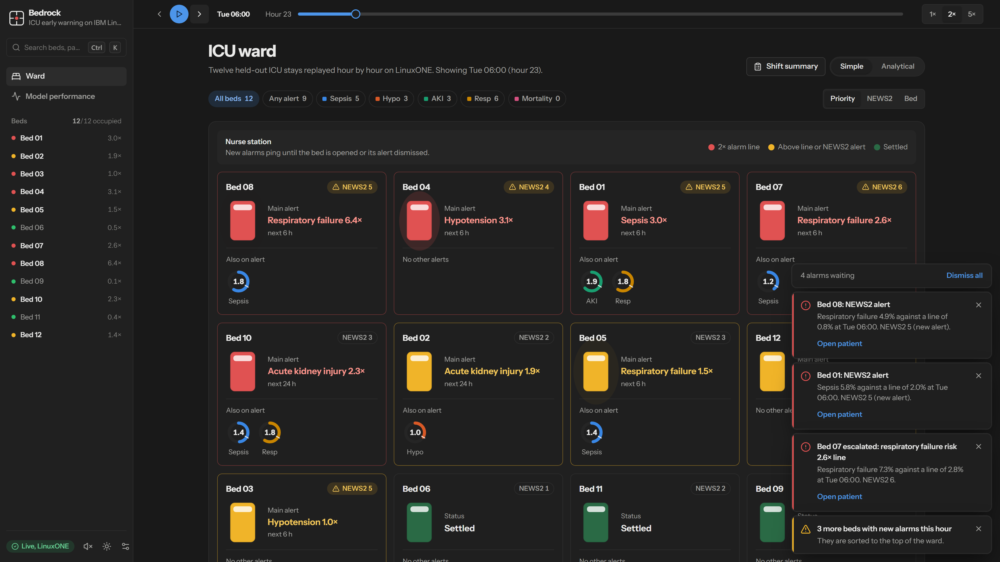
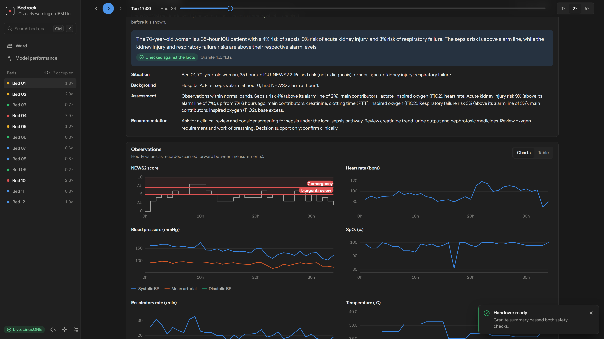

Real-time ICU early warning on IBM LinuxONE. It catches more deteriorating patients with fewer alarms, and patient data never leaves the machine.
Theme: Real-time AI for critical decisionswith AI secured: innovation without exposure
[TEAM_NAME]_IBM Z Datathon 2026 ProjectEvent code SSF2026
The problem
ICU nurses face too many alarms, and the alarms still miss patients who are getting worse.
Wards score deterioration with NEWS2, a points table from vital signs. It looks at one moment, it fires constantly, and it misses a large share of patients who go on to deteriorate. Staff learn to tune alarms out.
1.81
NEWS2 ≥ 5 alerts per bed per day
30%
of patients who develop sepsis get no warning from NEWS2 before it starts
6,053
held-out ICU stays we measured this on, 449 of them developed sepsis
Data: PhysioNet/CinC Challenge 2019 (hospitals A, B), PhysioNet 2012 (M), eICU Collaborative Research demo (C, external validation). De-identified research data.
Bedrock2
The solution
Five risks per bed, every hour, ranked so the sickest patient is always at the top.
Sepsis
next 6 h
Hypotension
next 6 h
Acute kidney injury
next 24 h
Respiratory failure
next 6 h
Mortality
this stay
Five XGBoost heads served with Snap ML on LinuxONE, sharing one 107-feature pass per bed.
Fair alarm lines: each head's threshold raises the same number of alarms as NEWS2 ≥ 5, so every comparison is like for like.
Explained: every alarm shows its main drivers, and Granite 4.0 writes a checked SBAR handover.
Built for the ward: nurse station alarms with acknowledgement and escalation, a simple and an analytical view, and a shift summary.
Bedrock3
Demo · live on LinuxONE
The ward board: real held-out ICU stays replayed hour by hour.

Results on held-out patients
Same catch rate as NEWS2 with 78% fewer alarms.
AUROC: Bedrock vs NEWS2
Bedrock NEWS2
Same catch rate (70%)
0.39 vs 1.81
alerts per bed per day: 78% fewer alarms
Same alarm budget (1.81 per bed-day)
95% vs 70%
of patients who develop sepsis are warned before onset
Sepsis head, 6,053 held-out stays, 449 with events. All heads also validated on an external hospital (eICU) they never trained on.
Bedrock5
Generative AI, kept honest
Granite 4.0 writes the handover on LinuxONE, and we check it before anyone reads it.

Rules build the facts (SBAR: situation, background, assessment, recommendation) straight from the data, so they are always right.
Granite writes a short spoken summary with llama.cpp built for zDNN, in a container with no published port.
Two checks: every number must appear in the facts, and a predicted risk may never be written as a diagnosis.
If a check fails, the summary is held back and the rule-based text is shown. The same pipeline writes a ward shift summary over the last n hours.
Bedrock6
AI secured · innovation without exposure
Hospitals train one model together without sharing a single patient record.
Each hospital runs in its own container on LinuxONE, mounting only its own data, read-only, on an internal network with no internet.
The model travels between hospitals (cyclic federated XGBoost). Each adds trees on its own patients and passes it on.
A privacy dial adds Laplace noise to every new leaf (differential privacy) before the model leaves the building.
The coordinator only ever sees models, held-out metrics and feature medians.
Sepsis model
Hosp. A
Hosp. B
Mean AUROC
A's data alone
0.829
0.760
0.795
B's data alone
0.785
0.876
0.830
Federated
0.817
0.867
0.842
Federated, ε = 1
0.808
0.867
0.837
Federated, ε = 0.3
0.775
0.796
0.785
Pooled data (not allowed in reality)
0.827
0.871
0.848
A model from one hospital drops on another's patients. The federated one works for both and gets within 0.006 of pooling the data.
Bedrock7
Technical design on IBM LinuxONE (s390x)
Everything runs on one LinuxONE Community Cloud VM.
Bedrock8
Using the platform, and measuring it
We benchmarked the AI accelerator instead of assuming it helps.
Sepsis head, 3-core VM
1 row
Ward (12)
10k rows
Snap ML, NNPA (zDNN tensors)
0.089 ms
0.143 ms
30.7 ms
Snap ML, CPU (compressed trees)
0.013 ms
0.043 ms
5.8 ms
XGBoost 2.0.3, CPU
0.212 ms
0.208 ms
12.1 ms
All backends match the trained model within 5e-7. A whole ward is scored in well under a millisecond, so alarms are truly real time.
Snap ML serves the trees; for our 100–575 depth-6 trees its CPU path beat NNPA, so we serve on CPU and keep NNPA one setting away.
zDNN on NNPA runs Granite's llama.cpp for the handover text.
CPACF handles the TLS crypto.
Containers isolate each hospital, the model and the API, with no published ports except HTTPS. Granite runs byte-swapped for big-endian s390x.
0.043 ms
to score a whole 12-bed ward
1.7M rows/s
throughput on 3 shared cores
~15 s
per Granite handover, generated on the VM
Bedrock9
Value to the community
Who benefits, and what it takes to get there.
Patients
Earlier warning of sepsis, low blood pressure, kidney injury and breathing failure, when treatment works best.
Nurses and doctors
Fewer false alarms, a ranked ward, and a handover that is written for them and checked before they see it.
Hospitals
Better models from shared learning without moving patient data, on hardware built for regulated, always-on work.
Honest limits
Retrospective research data, not a clinical trial. Decision support only: clinicians confirm.
Per-tree ε adds up across trees, so the privacy dial shows the trade-off, not a certified guarantee.
Next steps
Live HL7/FHIR vitals feed, SSO and per-user audit for a real trust.
Prospective silent trial on one ward, then more hospitals in the federation.
Bedrock10
Built during the IBM Z Datathon, 17–18 October 2026
Bedrock: earlier warnings, fewer alarms, no data exposed.
Links
Code: github.com/RayNCL2023/IBMZ-Datathon
Live API: 148-100-78-203.sslip.io (LinuxONE Community Cloud)